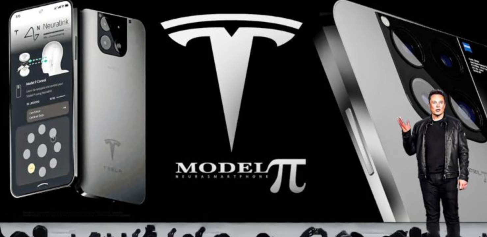

主播：250 美金特斯拉手机，上网不要钱，直接干翻三大运营商？这是流量收割，别被骗了！
最近打开短视频平台，总能刷到一些主播声嘶力竭地在喊：“变天了！马斯克带着特斯拉手机来了！已经通过内部测试，马上要量产了，来年就上市！不用插卡、全球免费上网、直连星链、速度吊打 5G！”
评论区里更是热闹得很：
刚买的华为、苹果是不是马上要变砖头？
太棒了再也不用交话费了！
还有人神神秘秘：“这下好了，那堵墙终于要倒了。”（由于星链（Starlink）在空中传输数据，GFW 怎么发挥作用？）
如果你的朋友圈里也有人转发这些内容，请把这篇文章甩给他。
说句不客气的话：这些鼓吹 “特斯拉手机干翻一切” 的主播，要么是不懂技术的法盲，要么就是纯粹想收割你流量的骗子。当他看完这篇文章，你问问他自己会购买特斯拉手机吗？会把自己的小米、华为手机都扔掉吗？
今天，我们就把这层窗户纸捅破，看看在现实商业和物理定律面前，这事儿到底有多荒谬。
一、 物理上的硬伤：拿滋水枪去救火？
主播们最大的卖点是：“星链有几千颗卫星，以后大家都连卫星，谁还用移动联通？”
听起来很美好，但他们掩盖了一个最基本的物理事实：带宽容量。
这就好比供水。
地面运营商（移动、电信、联通）铺设的几十万公里光纤和几百万个基站，就像是城市的 “自来水主管道”，又粗又稳，能同时满足中国 14 亿人刷抖音、看 4K 电影。
而天上的星链卫星，充其量就是几千根悬在空中的 “细水管”。
如果真的让十几亿中国人同时连上卫星上网，结果只有一个：网络瞬间瘫痪。
别说看视频了，连发个微信文字都发不出去。
卫星通信在民用领域的定位，永远是 “地面网络的补充”—— 它是给你在沙漠、海洋、飞机上救急用的，而不是让你在市中心躺着刷剧的。在沙漠里，在人迹罕至的地方，那里基站很少甚至没有基站，正是需要卫星手机的时候。还有，在自然灾害面前，例如 2025 年 7 月 23 日北京发生特大洪水，山里的电子设施和移动基站被洪水破坏，手机即使有电也无法联网，这种时候才是特斯拉卫星手机大显身手的时候。
想靠卫星取代地面基站？这不仅是不可能，更是反物理的。
二、 信号的尴尬：你打算天天站在楼顶打电话？
主播们还不会告诉你的是，卫星信号有一个致命弱点：穿透力极差。
我们的手机之所以在地下室、电梯、高楼深处都有信号，是因为地面基站无处不在，且低频信号绕射能力强。
但卫星在几百公里高的天上，信号到了地面已经很微弱，而且极难穿透钢筋混凝土。这意味着，如果你买了所谓的 “特斯拉手机”，在寸土寸金的城市里，只要你走进屋里，或者头顶有遮挡，卫星信号直接归零。
到时候，你那台 “吊打 5G” 的神机，还不是得乖乖切回中国移动或联通的信号？否则你就失联了。
所以，三大运营商不仅不会倒闭，反而依然是你生活的必需品，至少在城市的钢铁水泥森林里必是如此。
三、 所谓的 “拆墙”：马斯克不是傻子
这是最敏感，也是被传得最神乎其神的一点：很多人幻想买了这台手机，就能绕过监管，自由访问外网。
这简直是把国际法和商业规则当儿戏。
1，领空权与频谱主权
无线电信号和领空一样，是有主权的。任何一家通信公司，想要在中国境内发射和接收信号，必须拿到中国工信部的牌照。没有牌照，就是 “非法广播”。卫星电子信号，民用和军用没有本质区别，不加管控，国家怎么可能允许外国公司的卫星信号在中国境内肆意传播？
如果星链未经允许向中国境内发射信号，国家无线电管理部门完全有技术手段进行定点干扰和阻断。如果星链不听指挥，甚至可能会遭到武力击落。
2，软件锁区（Geo-fencing）
大家别忘了，马斯克是一个精明的商人，不是无政府主义者。
特斯拉上海超级工厂占据了特斯拉全球产能的半壁江山，中国是特斯拉最重要的市场之一。
你觉得马斯克会为了卖几部手机，去公然挑衅中国的网络主权法律，导致整个特斯拉汽车业务在中国被封杀吗？
如果特斯拉手机真的在中国上市，它一定会像苹果一样合规。大家知道，为了符合中国的数据法规，中国境内 iPhone 用户的数据都是存在贵州的服务器内的，并不是发送到境外苹果的服务器。
所以，等特斯拉手机上市，大概率的情况是： 手机里会有硬件或软件锁。当 GPS 定位显示你在中国境内时，星链功能会自动屏蔽或减弱，或者只在特定情况下 —— 例如无法连接基站才会开启，或者转而连接中国合规的卫星服务商，比如北斗短报文系统。国家在马斯克的星链和中国网民之间，一定会设置一个屏障，保护中国网民的数据安全。要知道，GFW 作为一道墙，不仅可以防墙内，也可以防墙外。看过军事演习的都知道，电子信息对抗的危险是真实存在的，不要以为不加保护不会受到伤害。
想要靠它翻墙？那是痴人说梦。
四、 既然如此，这手机到底有什么用？
剥离了这些营销号吹出来的泡沫，那么 250 美金，大概 2000 多块人民币的，不需要交月租费用的特斯拉手机，在未来究竟是个什么定位？
它绝不是为了取代 iPhone 或华为，也不是为了让四大运营商倒闭。
它的到来，会优化传统手机市场，会刺激华为、小米等国产手机厂商在某些方面做得更好，例如也使用硅基电池，使手机电池更耐用；例如也采用金属外壳，使手机更耐摔。说实话，今年小米发布的红米 Note 15 Pro 就有朝着这个方向进化的趋势。等未来特斯拉手机真来到中国时，加上关税，是否能与小米手机一战尚未可知。
还有运营商，一直以为月租贵，必须有月租，一直都是老百姓的痛点。零月租的特斯拉手机到来后，有可能会让四大运营商发生改变：一、可以无月租，不打电话不发短信，每月就是零费用；二、月租套餐费用大大降低，如果速度快，费用还很便宜，即使星链不要钱，老百姓在城市里也是会选择运营商套餐的。
四大运营商不会倒，家里的宽带还得续费，那堵墙也依然坚固。至于四大运营商不会倒，家里的宽带还得续费，那堵墙也依然关乎中国通信网和中国手机厂商的命。对于特斯拉手机，如果手头宽裕，到时候入手一台，以防自然灾害天气使用，也是可以的，它不需要月租，充一次电关机可以待机一两年，和家里的抢险应急设备没有本质区别了。
bye，就聊这么多。大家理智对待。
📅 2025 年 12 月 22 日周一

该文由 rustpress 编译。

评论